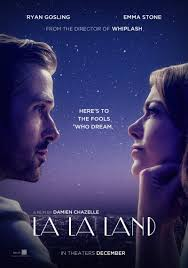
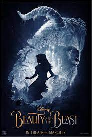

SPOTSTAR - ROMANCE
English romantic movies are known for their charm, wit, and emotional depth. They often blend romance with gentle humor, creating stories that are both heartfelt and relatable. Set against picturesque landscapes or quaint towns, these films offer a warm and nostalgic feel. Classics like Pride and Prejudice and Sense and Sensibility showcase timeless love stories rooted in tradition and social elegance. Modern romantic comedies such as Notting Hill, Love Actually, and About Time have become beloved around the world for their sincerity and clever dialogue. These movies often highlight the complexities of love, from chance encounters to long-lasting relationships. English romantic films tend to focus on character development and emotional connection rather than flashy drama. They celebrate both the magic and the awkwardness of falling in love. Strong performances and thoughtful writing are central to their appeal. The use of music and meaningful conversations adds to the emotional atmosphere. Whether historical or contemporary, these films capture the beauty and struggle of love with a distinct British sensibility. English romantic cinema continues to resonate with audiences seeking stories of tenderness, longing, and hope.
POPULAR FILMS



